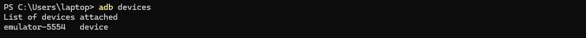
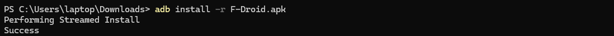
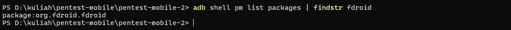
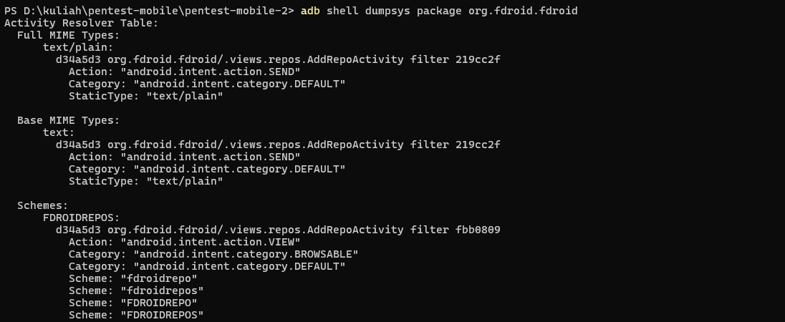
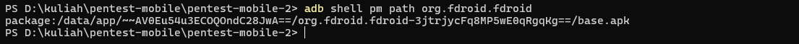
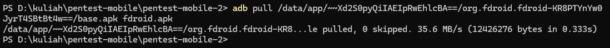
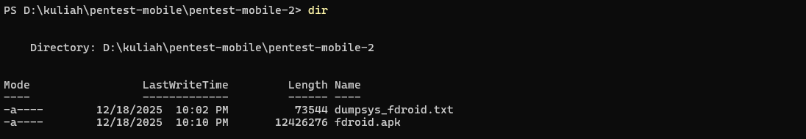
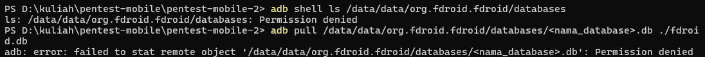
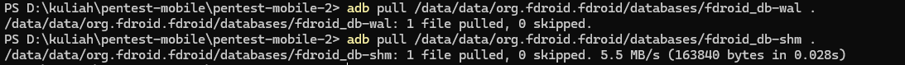
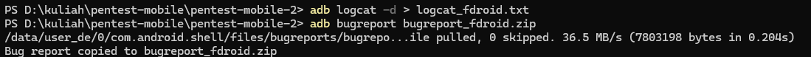

1. Pendahuluan
Android merupakan sistem operasi mobile yang bersifat terbuka dan banyak digunakan, sehingga menjadi target umum dalam pengujian keamanan aplikasi mobile. Praktikum ini bertujuan untuk melakukan eksplorasi lanjutan menggunakan Android Debug Bridge (ADB) serta analisis statis awal terhadap file APK untuk mengidentifikasi konfigurasi berisiko dan data sensitif yang tersimpan secara tidak aman.
2. Lingkungan dan Tools
- Sistem Operasi: Windows 11 (tanpa WSL, tanpa virtual machine)
- Android Emulator: Android Studio Emulator
- ADB (Android Debug Bridge)
- JADX GUI (decompiler APK)
- APK sample / aplikasi uji non-produksi
3. Persiapan Awal
3.1 Verifikasi Koneksi Emulator
Perintah adb devices digunakan untuk memverifikasi bahwa emulator Android telah terhubung dengan ADB dan siap digunakan untuk proses pengujian.

3.2 Siapkan APK Target (F-Droid)
- Unduh APK F-Droid dari https://f-droid.org/
- Pastikan file F-Droid.apk berada di folder Downloads.
- Masuk ke direktori Downloads dan pastikan file tersedia:

- Install F-Droid ke emulator menggunakan ADB:

- Status device menandakan emulator terhubung dengan ADB dan aplikasi F-Droid berhasil terpasang.

4. Eksplorasi ADB Lanjutan
Sebelum memulai praktik, pindah ke direktori kerja yang digunakan dengan menjalankan perintah berikut pada Command Prompt.
4.1 Enumerasi Aplikasi Terpasang
Menampilkan daftar aplikasi terpasang dan memfilter package F-Droid:

Digunakan untuk menampilkan seluruh package aplikasi yang terpasang pada emulator.
Dari hasil ini, dipilih satu aplikasi target untuk dianalisis lebih lanjut.
4.2 Informasi Detail Aplikasi
Mengambil informasi detail aplikasi F-Droid:

Menyimpan hasil informasi package ke file untuk dokumentasi:
Perintah ini memberikan informasi detail seperti permission, activity, service,
serta status debuggable pada aplikasi.
4.3 Mengambil File APK dari Emulator
Menentukan lokasi file APK F-Droid pada emulator:

Mengambil file APK F-Droid dari emulator ke sistem host Windows:

APK diekstrak langsung dari emulator untuk dilakukan analisis statis di sisi host Windows.
Pastikan file tersedia

4.4 Pengambilan Database dan Shared Preferences Aplikasi
Menampilkan daftar database milik aplikasi F-Droid pada emulator
Mengambil file database aplikasi F-Droid dari emulator ke host Windows (jika akses diizinkan):

Hasil ini menunjukkan bahwa data internal aplikasi tidak dapat diakses tanpa hak istimewa root, sesuai dengan model keamanan Android.
4.5 Pengambilan Database dan Shared Preferences Aplikasi (Root)
Aktifkan Root pada Emulator
Menampilkan daftar database milik aplikasi F-Droid pada emulator
Mengambil file database aplikasi F-Droid dari emulator ke host Windows

(Opsional, tapi direkomendasikan) Ambil file WAL & SHM

Setelah emulator dijalankan dalam mode root, direktori internal aplikasi F-Droid dapat diakses menggunakan ADB. File database berhasil diambil dari /data/data/org.fdroid.fdroid/databases untuk keperluan analisis lebih lanjut.
4.6 Pengambilan Log dan Bugreport Aplikasi
Mengambil log sistem yang berkaitan dengan aktivitas aplikasi F-Droid:
Menghasilkan bugreport perangkat yang mencakup informasi sistem dan aplikasi F-Droid:

File log dan bugreport digunakan sebagai bukti pendukung untuk analisis perilaku dan troubleshooting aplikasi.
5. Analisis Statis Awal APK
5.1 Dekompilasi APK
File APK dibuka menggunakan JADX GUI pada Windows untuk melihat struktur source code,
resource, serta file konfigurasi aplikasi.
5.2 Analisis AndroidManifest.xml
Beberapa konfigurasi berisiko yang diperiksa:
- android:debuggable="true"
- android:allowBackup="true"
- Activity atau Service dengan android:exported="true"
- Permission berlebihan yang tidak relevan
5.3 Pencarian String Sensitif
Dilakukan pencarian string plaintext seperti:
- API Key
- URL backend
- Username dan password hardcoded
Ditemukan beberapa string URL API yang ditulis secara langsung di dalam source code,
yang berpotensi dimanfaatkan oleh pihak tidak bertanggung jawab.
6. Temuan
- Aplikasi masih memiliki konfigurasi debuggable aktif
- Fitur allowBackup diaktifkan
- Terdapat activity yang diekspos tanpa validasi
- Ditemukan string URL API dalam bentuk plaintext
7. Analisis Risiko
Konfigurasi tersebut dapat dimanfaatkan untuk melakukan reverse engineering,
pencurian data, manipulasi aktivitas aplikasi, serta penyalahgunaan API backend.
Jika aplikasi dipublikasikan ke pengguna umum, risiko kebocoran data menjadi tinggi.
8. Rekomendasi
- Nonaktifkan mode debuggable pada build produksi
- Set allowBackup menjadi false
- Batasi komponen exported dan gunakan permission khusus
- Hindari penyimpanan data sensitif dalam plaintext
9. Kesimpulan
Eksplorasi ADB lanjutan dan analisis statis awal merupakan tahap penting
dalam pengujian keamanan aplikasi Android. Dengan metode sederhana dan tools gratis
di Windows 11, berbagai konfigurasi berisiko dapat diidentifikasi sejak awal
sebelum aplikasi dirilis ke publik.